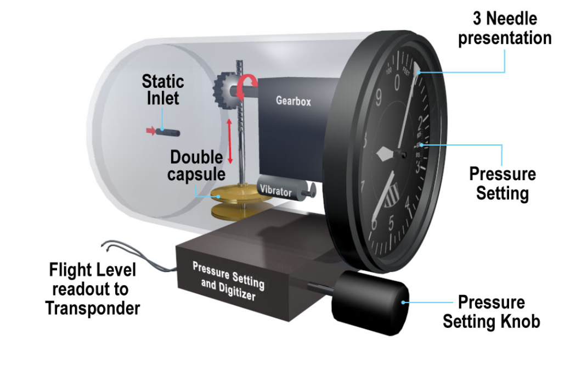

Pressure Altimeters
The Standard Atmosphere
- Sea level pressure: 1013.25hPa
- Sea level air density: 1225g/m$^3$
- Sea level air temperature: 15°C
- Temperature Reduction: 1.98°C/1000ft up to
- 36 090 ft at -56.5°C staying constant till
- 65 617 ft then rising at 0.3°C/1000ft
Altimeters
- Indicate altitude of aircraft by detecting changes in the static pressure
- Three mechanical types
- Simple Altimeters
- Sensitive Altimeters
- Servo-Assited Altimeters
- Modern systems calculate altitude in the ADC and output to an EFIS or Servo driven altimeter
Simple Altimeters
- Linked to an Aneroid Capsule
- Aircraft asscends and static pressure decreases
- capsule expands and dial rotates
- Aircraft decends and static pressure increases
- Capsule contracts and dial rotates
- Includes a subscale setting to adjust to datum pressures
- Calibrated to read correctly at all heights due to linkage being non-linear

Sensitive Altimeter
- Same principles as the Simple Altimeter but uses multiple capsules, increasing movement
- Can be fitted with vibrators to overcome static friction (stiction) and further improve the response to small altitude changes
- More complex gearing allows use of three pointers
- Tens of thousands
- Thousands
- Hundreds
- Some have a digital display with a single pointer
- Can be fitted with a digitizer to send Flight level information to ATC transponder
- Both vibrators and digitizers require electrical supply

Servo Assisted Altimeters
- Increased accuracy by not requiring a direct mechanical link between capsules and height pointers
- Movement is transmitted to a pivoted bar (I-Bar)
- E Shaped bar with coils around the protrusions
- AC Supply is fed to center of the E Bar
- when the air gaps between E and I are even, coils on outer limbs produce equal and opposite voltages
- I bar is disturbed and one limb of E bar produces a greater voltage than the other one
- voltage difference is fed to an amplifier then to servo moter
- through a feedback system repositions the I bar so air gaps are equal again
-
Described as 'induction pick off' or 'electromagnetic pick off'
-
No vibrator is needed to overcome 'stiction
- More complex gearing allows for higher indicating range
- Use drum and pointer display
ADC Driven System
- Static pressure is sent to ADC to calculate altitude referenced to 1013 and subscale set by pilot
- reference to 1013 is sent to ATC
- subscale reference sent to a mechanical instrument or EFIS display
Units and Accuracy
- ICAO PANS-OPS sets accuracy requirements for altimeters
- Depends on test range (indicating range)
-
Must show QFE or QNH accuratly with plus or minus
- 20m or 60ft for altimeters with testing range of 0 - 9000m (0-30 000ft)
- 25m or 85ft for altimeters with testing range of 0 - 15 000m (0 - 50 000ft)
-
Most altimeters display feet
- China and Russia use meters for altitude
- 1m = 3.28ft
- On EFIS aircraft altimeter can usually be changed between m and ft
- Otherwise a table needs to be used
Altimeter error
Position Error
- Can affect altimeter readings
- Minimised by good design
- varies with TAS and Angle of attack
Instrument Error
- Caused by friction in the gearing
- Overcome with vibrators
- Any capsule based system will encounter Hysteresis Error
- Capsule becomes reluctant to change shape after being at one pressure for a period of time
Barometric Error
- Any change of sea level pressure from the datum on the subscale will give an incorrect altitude reading
- Removed by adjusting the subscale to the correct value
- If the subscale is not adjusted:
- Going High to Low pressure - Altimeter will over read
- Going Low to High pressure - Altimeter will under read
Temperature Error
- Error arising when the temperature of the airmass differs to that of the ISA
- Cold air occupies less vertical extent than hot air
- Sea level pressure may be the same
- Implications are:
- Going from Warm to Cold air - Altimeter may over read
- Going Cold to Warm air - Altimeter may under read
For both Temperature and Barometric error you can remember High - Low - High
Line blockages
- If the static line becomes blocked the instrument can not change
- If the static line fractures inside the pressurized hull, cabin altitude will be displayed
- If altimeter reading is suspected to be wrong GPS altitude may offer an alternative
- Requires four satellites for a 3-D GPS fix
- Without GPS augmentation GPS altitude should not be considered accurate enough to replace pressure instruments
Altimeter Pressure Settings
-
QFE: Subscale setting where altimeter will read 0 on the ground
- Airfield QFE is measured at the highest point on the airfield surface
- Touch down QFE is measured at the touchdown point on the runway in use
-
QNH: Subscale setting so altimeter reads altitude above MSL
- Found by measuring QNH and increasing it to sea level assuming ISA temperature values
- Airfield QNH gives altitude AMSL for the position of the aerodrome
- Must be set on at least one altimeter when departing from an aerodrome in controlled airspace
- Regional QNH is the lowest forecasted QNH for the next our within a pre-designated zone
- QNH and QFF will only be the same if ambient conditions are ISA
- Standard setting: 1013.25hPa (29.92 inches)
- Altimeter reads pressure altitude or flight level
- Used above the transition level

- When answering questions relating to Flight levels, altitude or height it's best to draw it out similar to above
- Always put the biggest value (hpa at the bottom)
- Note 1013 (Flight level) is a standard and always remains in the same spot
Density Altitude
- Pressure altitude corrected for temperature
- or Altitude in the ISA which gives the same air density as the prevailing Non-ISA combination of Temperature and pressure altitude
- Can be calculted on CRP5 by:
- Set pressure altitude against temperature in AIRSPEED
- With out moving dial read off density altitude in DENSITY ALTITUDE window
- Alternativly can use formula
- Density Altitude = Pressure altitude + (120 x ISA deviation)